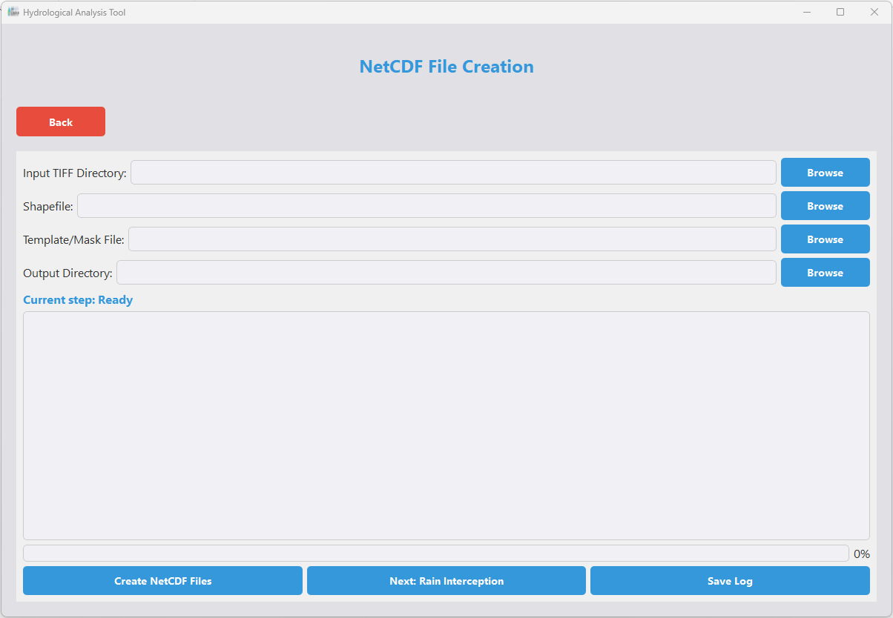

Overview
The WA+ GUI Tool provides a user-friendly interface for running WA+ (Water Accounting Plus) analyses without requiring technical knowledge of Python or Jupyter Notebooks. It simplifies the process of generating WA+ Sheets 1 & 2 through an intuitive graphical interface.
Evolution of the Tool
Initial Version (Jupyter Notebooks)
- Required manual folder directory changes
- Complex Conda environment setup
- GDAL and Cairo installation issues
- Technical knowledge needed
Tkinter Version
- Basic GUI replacing notebooks
- Automated file selection and processing
- Single-file distribution with PyInstaller
- Reduced setup time
Current PyQt Version
- Modern, responsive UI
- Tabbed interface with previews
- Native installers for all platforms
- Separation of app logic and packaging
Features
- Intuitive graphical interface for WA+ analysis
- Automated generation of WA+ Sheets 1 & 2
- File selection dialogs and path management
- Table previews before processing
- Progress indicators and completion notifications
- Multiple workflow options (NetCDF creation, SM Balance, Hydroloop)
Interface Walkthrough
Step 1: Main Menu
The starting point of the application where you can select different workflows.
Step 2: Select Workflow
Choose between different processing workflows: NetCDF Creation, SM Balance, or Hydroloop.
Step 3: Create NetCDF
Interface for creating NetCDF files with various configuration options.
Step 4: SM Balance

Soil Moisture balance calculation interface with input parameters.
Step 5: Hydroloop
Hydrological loop processing interface with visualization options.
Step 6: Results
View and export the processed results from your selected workflow.
Download Options
Technologies Used
- Python
- PyQt5 for modern GUI
- Tkinter for basic version
- PyInstaller for executable packaging
- Briefcase for native installers
- GDAL for geospatial processing
- NetCDF for data storage